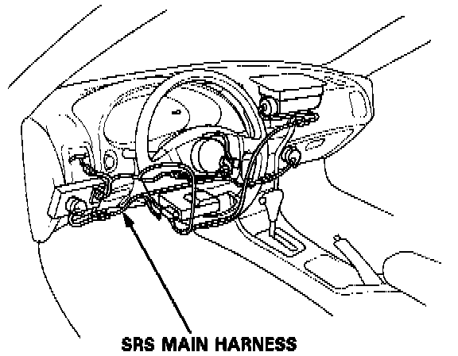
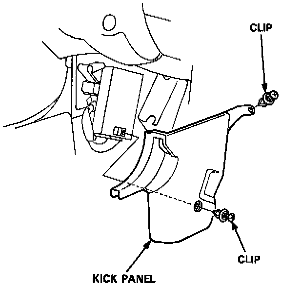
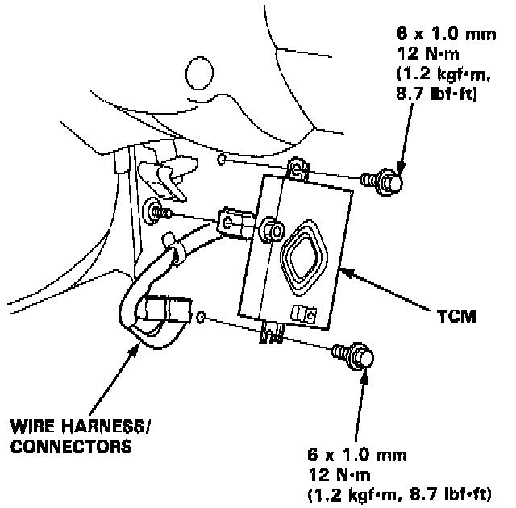

Control Module: Service and Repair

TRANSMISSION CONTROL MODULE (TCM) A/T
The Transmission Control Module (TCM) is located below the dashboard, behind the left side kick panel on the driver's side.
CAUTION:
- All SRS electrical wiring harnesses are covered with yellow insulation.
- Before disconnecting any part of the SRS wire harness, connect the short connectors.
- Replace the entire affected SRS harness assembly if it has an open circuit or damaged wiring.

1. Remove two clips securing the kick panel then remove it.

2. Disconnect the connectors and remove the TCM.